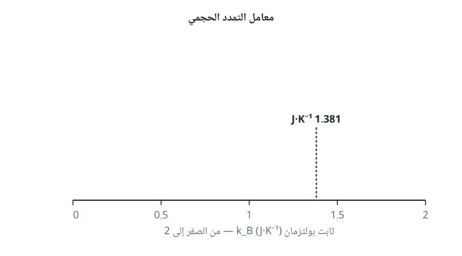

معامل التمدد الحجمي
Coefficient of volumetric expansion
معامل التمدد الحجمي هو نسبة الزيادة في حجم مادة إلى حجمها الأصلي لكل درجة كلفن من ارتفاع الحرارة، ورمزه β، ووحدته K⁻¹، ويساوي ثلاثة أمثال معامل التمدد الطولي في المواد المتماثلة.
معامل التمدد الحجمي β هو نسبة التغيّر النسبي في الحجم إلى التغيّر في درجة الحرارة: β = (1/V)·(dV/dT)، ووحدته كلفن⁻¹. وفي المواد المتماثلة الخواص يساوي β ثلاثة أمثال معامل التمدد الطولي α: β ≈ 3α. وللمواد الصلبة قيم صغيرة (الفولاذ 3.6×10⁻⁵ K⁻¹، الألومنيوم 6.9×10⁻⁵ K⁻¹)، وللسوائل قيم أكبر (الماء 2.1×10⁻⁴ K⁻¹ عند 20 °م)، وللغازات أكبر بكثير (نحو 3.4×10⁻³ K⁻¹ عند الظروف العادية). مثال: 1.000 m³ من الألومنيوم عند 20 °م يتمدد عند 100 °م إلى 1.000 × (1 + 6.9×10⁻⁵ × 80) = 1.0055 m³.
كيف تعمل الظاهرة؟
التمدد الحراري ناتج عن زيادة الطاقة الحركية للجزيئات مع الحرارة. في المواد الصلبة، تزداد سعة اهتزاز الجزيئات حول مواضع توازنها، ولأن منحنى طاقة الجهد غير متماثل (أشدّ عند التقارب منه عند التباعد)، فإن متوسط المسافة بين الجزيئات يزداد مع زيادة سعة الاهتزاز. هذا الأثر اللاتماثلي هو أصل التمدد: لو كان المنحنى متماثلاً لما تغيّر الحجم. وفي السوائل والغازات يزداد التمدد لأن الجزيئات تكتسب حرية حركة أكبر. ولهذا يكون تمدد الغازات أكبر بكثير: لا قيد شبكي يحدّ حركتها.
العلاقة بالأرقام
β = (1/V)(∂V/∂T)_p، وV = V₀(1 + βΔT)، وβ ≈ 3α. والكثافة تتبع ρ = ρ₀/(1 + βΔT). والإجهاد الحراري في عنصر مقيّد: σ = −E·α·ΔT. مثال عددي: V₀ = 1.000 m³، β = 6.9×10⁻⁵ K⁻¹، ΔT = 80 K → ΔV = 5.52×10⁻³ m³. ولو كان العنصر مقيّداً تماماً بـE = 70 GPa وα = 2.3×10⁻⁵ K⁻¹ لكان الإجهاد σ = 70×10⁹ × 2.3×10⁻⁵ × 80 = 129 MPa.
مفاهيم متقاربة
يُفرَّق بين β وα بدقة: α = (1/L)(∂L/∂T) للطول، وβ = (1/V)(∂V/∂T) للحجم، والعلاقة β = 3α للمواد المتماثلة فقط؛ في البلورات غير المتماثلة تختلف المعاملات في الاتجاهات الثلاثة. ويُفرَّق بين التمدد الحراري والانضغاطية: الأولى تغيّر بالحرارة عند ثبات الضغط، والثانية تغيّر بالضغط عند ثبات الحرارة. ويُفرَّق بين التمدد والإجهاد الحراري: التمدد تشوّه حرّ، والإجهاد يظهر حين يُمنع التشوّه. والخطأ الشائع أن يُظن أن التمدد يسبب إجهاداً دائماً؛ لا يسببه إلا إذا كان العنصر مقيّداً.
حدود التطبيق
العلاقة الخطية V = V₀(1 + βΔT) صالحة لمدى حراري محدود؛ عند مدى واسع يلزم حدّ ثانٍ أو معادلة تجريبية. والماء شاذّ بين 0 و4 °م حيث β سالب. وفي المواد غير المتماثلة يصبح β موتراً. وعند الاقتراب من درجة الانصهار أو التحول الطوري تتغير القيمة تغيراً حاداً. وأخيراً في المواد المسامية والمركبة تُستعمل قيمة فعّالة تعتمد على البنية، وقد تكون مختلفة تماماً عن قيمة المادة الصلبة نفسها.

| الكمية | القيمة | المصدر |
|---|---|---|
| كثافة الماء السائل عند 25 °م | 997.00 kg/m³ | [2] |
| تمدد 1.000 m³ ألومنيوم من 20 إلى 100 °م | 5.52×10⁻³ m³ | [3] |
المصادر
- 1 CODATA Value: Boltzmann constant — NIST — CODATA 2022 recommended values (2024). physics.nist.gov/cgi-bin/cuu/Value?k · اطُّلع عليه 2026-11-21
- 2 NISTIR 5078 — Thermodynamic Properties of Water, 0 to 374 C and Pressures to 100 MPa (IAPWS-95 tabulation) — NIST — National Institute of Standards and Technology (1998). www.nist.gov/publications/thermodynamic-properties-water-temperatures-0-374-c-and-pressures-100-mpa · اطُّلع عليه 2026-11-21
- 3 The International System of Units (SI), 9th edition (2019) — BIPM — Bureau International des Poids et Mesures (2019). www.bipm.org/en/publications/si-brochure · اطُّلع عليه 2026-11-21
استشهد بهذا المصطلح
الصيغتان مبنيتان من بيانات الصفحة نفسها: العنوان والتاريخ ورابط النسخة المنشورة.
معامل التمدد الحجمي — Coefficient of volumetric expansion. (2026). ديوان المعرفة — انفراد. https://infiradev.com/diwan/terms/term-volumetric-expansion.html
@misc{term-volumetric-expansion2026,
title = {معامل التمدد الحجمي},
titleaddon = {Coefficient of volumetric expansion},
howpublished = {{ديوان المعرفة — انفراد} — مرجع علمي عربي},
year = {2026},
url = {https://infiradev.com/diwan/terms/term-volumetric-expansion.html},
urldate = {2026-11-26},
note = {مراجعة علمية: hermes (مراجعة معتمدة 2026-11-26)}
}
راجعه: hermes (مراجعة معتمدة 2026-11-26) · 2026-11-26 · آخر تحديث 2026-11-21